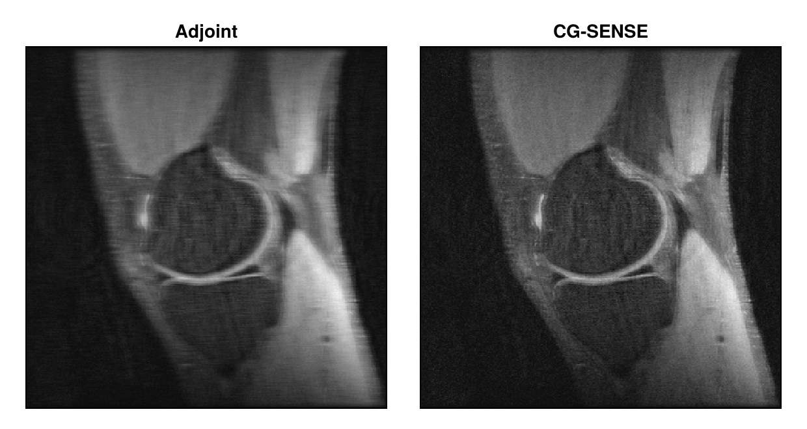

Use Encoding Operators Directly
reconstruction builds the encoding operator of an acquisition and solves the reconstruction problem with it. To change one of these steps, for example to add an operator or to follow the iterations of the solver, you can build the operator with MRIOperators yourself and solve the problem with RegularizedLeastSquares.jl, which MRIReco re-exports. Signal Model and Encoding Operators explains the operators.
The example is the CG-SENSE reconstruction of Multi-Coil Reconstruction: the knee data of the documentation, undersampled by a factor of 4, with the coil sensitivities estimated by ESPIRiT.
using MRIReco, MRIFiles, MRISampling, MRICoilSensitivities, CairoMakie
using Pkg.Artifacts
artifacts = joinpath(pkgdir(MRIReco), "docs", "Artifacts.toml")
datadir = ensure_artifact_installed("MRIRecoDocsData", artifacts; io = devnull)
acqData = AcquisitionData(ISMRMRDFile(joinpath(datadir, "knee_3dFSE_slice170.h5")))
acqDataSub = sample_kspace(acqData, 4.0, "poisson", calsize = 30, seed = 1234)
sensitivities = espirit(acqDataSub, (6, 6), 30, eigThresh_2 = 0)Building the Encoding Operator
encodingOps_parallel returns the encoding operators for data with coil sensitivities, one for each contrast of a slice, which the keyword slice selects, by default the first one. The knee data has one contrast and one slice:
shape = (320, 320)
E = encodingOps_parallel(acqDataSub, shape, sensitivities)[1]
size(E)(204800, 102400)The operator maps an image with 320 × 320 voxels, stored as a vector, to the measured samples of all 8 coils. The data needs the same layout, a vector with the samples of the first coil, then those of the second coil, and so on. multiCoilData returns it for one contrast and slice:
b = multiCoilData(acqDataSub, 1, 1)
length(b) == size(E, 1)trueLike a matrix, the operator is applied with *, and adjoint(E) or E' applies its adjoint. Applied to the data, the adjoint sums the zero-filled images of the coils, weighted with the conjugate sensitivities. Since profiles are missing, the result, on the left in the figure below, shows the artifacts of the undersampling:
imageAdjoint = reshape(adjoint(E) * b, shape)Solving the Reconstruction Problem
createLinearSolver creates a solver of RegularizedLeastSquares.jl for an operator, and solve! runs it on the data. reconstruction with "multiCoil" does two more things. It weights the operator and the data with a diagonal operator, WeightingOp from LinearOperatorCollection.jl, which MRIOperators re-exports. Its diagonal is what samplingDensity returns, the square roots of the density compensation factors, see Density Compensation. For Cartesian data, they are constant, but they set the scale of the problem and with it the effect of the regularization. And it gives the solver the normal operator from normalOperator, which can be faster than applying the operator and then its adjoint, see The Normal Operator and the Toeplitz Approach. With both, CGNR with a small $\ell_2$ regularization, scaled with the magnitude of the data, and 10 iterations gives the CG-SENSE reconstruction of the tutorial. A callback stores, in each iteration, the norm of the residual of the normal equations that CGNR solves:
numChan = numChannels(acqDataSub)
weights = samplingDensity(acqDataSub, shape)[1]
W = WeightingOp(eltype(weights); weights, rep = numChan)
WE = W ∘ E
solver = createLinearSolver(CGNR, WE; AHA = normalOperator(WE), reg = L2Regularization(1e-3),
normalizeReg = MeasurementBasedNormalization(), iterations = 10)
convergence = StoreConvergenceCallback()
imageCGSENSE = reshape(solve!(solver, W * b; callbacks = convergence), shape)
fig = Figure(size = (620, 330))
for (i, (image, title)) in enumerate(zip((imageAdjoint, imageCGSENSE), ("Adjoint", "CG-SENSE")))
ax = Axis(fig[1, i]; title, aspect = DataAspect(), yreversed = true)
heatmap!(ax, abs.(image)'; colormap = :grays)
hidedecorations!(ax)
end
fig
The callback holds this norm before the first and after each of the 10 iterations:
round.(convergence.convMeas[:residual], sigdigits = 2)11-element Vector{Float32}:
390000.0
14000.0
4500.0
1700.0
800.0
330.0
160.0
78.0
31.0
13.0
5.7The result equals that of reconstruction with the same parameters:
params = Dict{Symbol, Any}(:reco => "multiCoil", :reconSize => shape, :senseMaps => sensitivities,
:solver => CGNR, :reg => L2Regularization(1e-3),
:normalizeReg => MeasurementBasedNormalization(), :iterations => 10)
vec(imageCGSENSE) ≈ vec(reconstruction(acqDataSub, params))trueWith noise samples in :noiseData, reconstruction also decorrelates the coils, see Noise Decorrelation, and for trajectories with circular k-space coverage (isCircular), such as radial and spiral ones, it sets the image outside a circle to zero with circularShutter!.
Building the Operator from Its Parts
The operator of encodingOps_parallel is composed of simpler operators. fourierEncodingOp creates the Fourier operator of one coil. With "fast", it is an FFT for Cartesian trajectories, here followed by a sampling operator that keeps the samples in subsampleIdx, and an NFFT for non-Cartesian ones; "explicit" evaluates the Fourier sum directly. SensitivityOp multiplies the image by the sensitivities of all coils, here those of the first slice, and DiagOp applies a copy of the Fourier operator to the image of each coil:
F = fourierEncodingOp(shape, trajectory(acqDataSub, 1), "fast";
subsampleIdx = acqDataSub.subsampleIndices[1])
S = SensitivityOp(sensitivities[:, :, 1:1, :])
E2 = DiagOp(F, numChan) ∘ S
x = randn(ComplexF32, prod(shape))
E2 * x ≈ E * xtrueBuilt in this way, each part can be replaced or extended. The Fourier operator has to be repeated for each coil, and the data has to be one vector (discussion #225): with only one block, DiagOp(F) ∘ S is still created, but applying it fails with LinearOperatorException("shape mismatch"), and solve! takes the columns of a matrix of samples × coils as separate data vectors, which don't fit the operator.
This page was generated using Literate.jl.